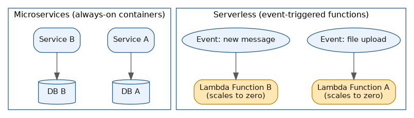
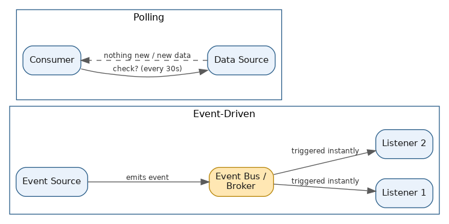

Misc Concepts
Table of Contents
- Overview
- Batch Processing vs. Stream Processing
- XML vs. JSON
- Synchronous vs. Asynchronous Communication
- Push vs. Pull Notification Systems
- Microservices vs. Serverless Architecture
- Message Queues vs. Service Bus
- Stateful vs. Stateless Architecture
- Event-Driven vs. Polling Architecture
- Common Interview Questions
- Key Takeaways
Overview
Not every interview-worthy idea fits neatly under a single named pattern — a lot of system design conversations come down to quick "X vs. Y" comparisons that reveal whether a candidate understands the tradeoffs, not just the vocabulary. This page collects eight of those recurring comparison pairs: batch vs. stream processing, XML vs. JSON, synchronous vs. asynchronous communication, push vs. pull notifications, microservices vs. serverless, message queues vs. service buses, stateful vs. stateless architecture, and event-driven vs. polling architecture. Each is short on its own, but together they cover a lot of ground that interviewers like to probe.
Batch Processing vs. Stream Processing
Batch and stream processing are two philosophies for handling data, and the real difference is timing and completeness. Batch processing gathers data over some window — an hour, a day, a week — and then processes that entire chunk in one go. Stream processing instead handles data continuously, event by event (or in tiny micro-batches), the moment it arrives, with no defined start or end to the flow.
Hadoop MapReduce and Apache Spark's original batch engine are classic batch tools — the kind of system you'd point at a full day's log files overnight to produce a morning report. It's efficient and easy to reason about, but inherently delayed: nothing comes out until the whole batch has run, which makes it a good fit for end-of-day financial reconciliation, monthly billing statements, or training a model on last month's data. Stream tools like Apache Flink and Kafka Streams process each event as it happens, often in sub-second time, so the system can react in near real time; Spark has also grown "structured streaming," which uses very short micro-batches (often around 100ms) to approximate real-time behavior on top of its batch engine. Stream processing is the right call for fraud detection on card swipes, real-time recommendations, live traffic dashboards, or watching IoT sensor data for anomalies.
Many production systems use both together — streaming raw events through something like Kafka for fast reactions, while the same data is also batch-processed nightly (Spark, Hadoop) for deeper historical analytics or corrections that don't need to happen instantly. This blended approach is sometimes called a "lambda architecture."
| Dimension | Batch Processing | Stream Processing |
|---|---|---|
| Data scope | Bounded — a fixed, complete chunk of data | Unbounded — continuous, ongoing flow of events |
| Latency | Minutes to hours (or longer) | Milliseconds to seconds |
| Example tools | Hadoop MapReduce, Apache Spark (batch) | Apache Flink, Kafka Streams, Spark Structured Streaming |
| Typical use cases | End-of-day reports, payroll, historical analytics, ML training | Fraud detection, live dashboards, real-time recommendations, IoT monitoring |
| Resource pattern | Runs on a schedule, can use resources heavily for a short burst | Runs continuously, needs infrastructure always on |
XML vs. JSON
XML and JSON are both text-based formats for structured data, but they read and behave differently. XML nests opening and closing tags, similar to HTML — <user><name>Raj</name><age>30</age></user>. JSON expresses the same data as key-value pairs with braces and brackets — {"user": {"name": "Raj", "age": 30}}. Both are human-readable, but JSON maps much more directly onto how most languages already represent data in memory (objects, arrays, numbers, booleans), which makes it simpler to parse.
JSON has become the default for modern web APIs — the vast majority of public REST APIs return it. It's typically 30-50% more compact than the equivalent XML, natively understood by JavaScript (it's literally JavaScript's own object syntax), and quick to parse with almost no setup in any language, which is why it's the default choice for new projects and mobile backends. XML hasn't gone away, though — it's still deeply embedded in enterprise and legacy systems that value its stricter, more expressive structure: attributes on elements, namespaces (avoiding naming collisions when combining data from different sources), comments, and formal schema validation (XSD) that can enforce exactly what a valid document looks like. That's why XML remains the backbone of SOAP web services, SWIFT banking messages, HL7 healthcare data exchange, SAML single sign-on, RSS/Atom feeds, and configuration-heavy formats like Android layouts and SVG.
| Dimension | XML | JSON |
|---|---|---|
| Syntax | Nested tags, like HTML | Key-value pairs, braces/brackets |
| Size | Larger, more verbose | Smaller, more compact |
| Native data types | Everything is text | Native numbers, booleans, null, arrays |
| Comments | Supported | Not supported |
| Schema validation | Strong (XSD, DTD) | Weaker (JSON Schema exists but less standardized) |
| Common today in | SOAP, SWIFT, HL7, SAML, RSS, SVG, config files | REST APIs, mobile apps, most modern web services |
In short: for new systems exchanging data over the web, JSON is almost always the practical default, while XML remains the right choice when integrating with legacy enterprise systems, when strict document validation is required, or when working with document-style content that benefits from attributes and namespaces.
Synchronous vs. Asynchronous Communication
Synchronous communication means a service sends a request and blocks — pauses and waits — until a response comes back before doing anything else, the way a typical REST call, gRPC call, or direct database query works. It's simple to follow and a natural fit whenever an immediate answer is genuinely required, like checking a password during login. Asynchronous communication means the requesting service fires off a request (often through a queue, event, or callback) and moves on immediately without waiting; the result, if any, arrives later through a separate message or notification — the everyday analogy is sending a text message rather than standing there waiting for a reply. Netflix is a well-known real-world example of heavy asynchronous design, with hundreds of microservices communicating through events and queues rather than calling each other directly.
The tradeoffs mirror each other. Synchronous calls are easy to reason about and debug, but a slow or failing downstream dependency can stall the entire chain of requests behind it, and tied-up connections waiting for responses can become a bottleneck under load. Asynchronous calls decouple sender from receiver — the sender never gets stuck waiting, and the system tolerates the receiver being temporarily slow or down — but they add complexity: you now have to track requests, handle out-of-order or delayed responses, and design for eventual rather than immediate consistency. Most large systems use both deliberately: synchronous calls for the handful of interactions where a user is directly waiting on an answer ("log me in," "show me my cart"), and asynchronous messaging for everything that can happen in the background (confirmation emails, analytics updates, recommendation generation, warehouse syncing).
Push vs. Pull Notification Systems
Push and pull describe opposite directions for how updates flow from a producer to a consumer. In a push model, the producer sends data the moment it's available — the consumer never has to ask. In a pull model, the consumer has to reach out and ask "is there anything new?", typically at regular intervals — this repeated asking is called polling.
Push shows up everywhere in consumer products: mobile push notifications through Apple's APNs or Google's FCM, chat apps like Slack or WhatsApp surfacing a new message instantly, webhooks that services like Stripe or GitHub fire the moment something happens (a payment succeeds, a code push lands), and live stock-price feeds streamed to trading apps. Push delivers extremely low latency, but it's harder to scale to huge numbers of consumers, since the producer has to actively maintain a connection or delivery channel to every one of them, plus a fallback plan for consumers who are temporarily unreachable. Pull puts the consumer in control instead: a client polling a REST API every 10 seconds, an email client checking a mail server periodically, or Amazon SQS, where consumers actively poll the queue rather than having messages pushed to them. Pull is simpler to build, easier to scale with caching, and lets the consumer set its own pace — but it introduces built-in delay (you only learn about new data on your next check) and can waste resources when nothing new has actually happened.
Many systems use hybrid techniques to get the best of both: long polling (the server holds a client's request open until new data shows up instead of replying immediately with "nothing new"), Server-Sent Events (a persistent one-way server-to-client push connection), WebSockets (a persistent two-way connection for real-time back-and-forth), and pub/sub-with-pull setups where events land in a queue but consumers pull from it whenever they're ready.

Microservices vs. Serverless Architecture
Microservices and serverless get mentioned together often, but they answer different questions. Microservices is a way of designing an application — breaking it into small, independently deployable services, each owning one business capability (a "user service," a "payments service," an "inventory service"), each with its own database and release cycle. Serverless is a way of running code — you write a function, upload it, and the cloud provider handles provisioning, scaling, and patching, billing you only for the compute time actually used. AWS Lambda is the best-known example: you write a small handler, and Lambda runs it in response to triggers like an HTTP request, an S3 upload, or a new queue message, with no server for you to manage.
Because they solve different problems, they're often combined rather than competing. A microservices architecture can run on containers on your own servers (or Kubernetes), or it can implement some or all of its services as serverless functions — sometimes called "serverless microservices." An e-commerce backend, for example, might decompose checkout into microservices where a few of them (sending confirmation emails, resizing product images) run as individual Lambda functions triggered by events, while the constantly-busy core order-processing logic runs as a traditional always-on container.
Serverless brings real advantages — no servers to provision or manage, automatic scaling (including scaling to zero and paying nothing when idle), and lower cost for spiky or infrequent workloads. But it has real limits too: AWS Lambda functions have a maximum runtime (around 15 minutes), limited control over exact CPU/memory configuration, and "cold start" latency the first time a function runs after being idle, which can make it a poor fit for long-running or highly latency-sensitive work. The choice (or blend) usually comes down to workload shape: reach for microservices when you want architectural independence and clear service boundaries regardless of how code runs; reach for serverless when you want to minimize operational burden and pay only for what you use, especially for event-triggered or infrequent tasks. Many production systems today are a blend of both.

Message Queues vs. Service Bus
A message queue is relatively simple infrastructure whose job is to hold messages until a consumer is ready, typically supporting basic point-to-point delivery (one message, one consumer). Amazon SQS and Azure Storage Queues are good examples — built for high throughput and straightforward decoupling, with a simple feature set: send a message, receive it, delete it once processed.
A service bus is a richer messaging backbone layered on top of basic queuing, with Azure Service Bus as the canonical example. Beyond simple queues, it offers topics and subscriptions (a full publish/subscribe model where many subscribers each get a filtered copy of a message), message sessions (grouping related messages so they're processed together, in order, by the same consumer), transactions (grouping multiple send/receive operations so they succeed or fail as a unit), dead-lettering (automatically routing repeatedly-failing messages to a separate queue for investigation), and strict FIFO ordering guarantees.
The practical difference comes down to how much built-in orchestration is needed. If the job is just handing off a stream of independent tasks to a pool of workers — resize this image, send this email, process this file — a basic queue like SQS or Azure Storage Queues is simpler, cheaper, and handles very high throughput well. If multiple enterprise systems need to be integrated with richer guarantees — strict ordering within a related group of messages, transactional consistency across several operations, or one event needing to reach several different subscriber systems with different filtering rules — a service bus like Azure Service Bus (or, in the open-source world, RabbitMQ configured with topic exchanges) is generally the better fit. Cost and complexity scale accordingly: basic queues are cheaper per message and simpler to reason about, while a full service bus carries more operational overhead but saves you from hand-building transactional messaging or session-based ordering yourself.
Stateful vs. Stateless Architecture
Whether a system is "stateful" or "stateless" describes whether a server remembers anything about a client between one request and the next. In a stateful architecture, the server holds onto information about a particular client or session — a login session, shopping cart contents, a partially completed multi-step form — and that memory shapes how it responds to the next request. An online banking application is the classic example: once you log in, the server tracks your authenticated session, and later requests (checking your balance, transferring money) are handled in the context of that ongoing session.
In a stateless architecture, each request must carry (or the server must be able to independently fetch) everything needed to process it, without relying on anything remembered from a previous interaction. RESTful APIs are the textbook example — a well-designed REST call includes an auth token and all necessary data in each request, so any server instance, not just the one that handled the last request, can process it correctly. CDNs work the same way, since each request for a static asset is handled independently by whichever edge server picks it up.
The practical difference matters most for scaling and reliability. Stateless servers are far easier to scale horizontally — since no server holds client-specific memory, new instances can be spun up and load-balanced across freely, and if one crashes, another picks up the next request with no user-visible interruption. Stateful servers are harder to scale this way, since a request tied to a particular session often needs to return to the specific server (or storage) holding that session's state — handled either with "sticky sessions" (routing a user's requests consistently to the same server) or by moving state out to a shared external store like Redis so any server can retrieve it. Most large systems end up as a hybrid: application servers stay stateless so they can scale and fail over cleanly, while the actual state — sessions, carts, watch history — lives in a separate shared, stateful data layer. Netflix again illustrates this well: its video-streaming application layer is largely stateless, while user-specific state like watch history and recommendations lives in dedicated stateful stores.
Event-Driven vs. Polling Architecture
Event-driven and polling architectures are two strategies for how a system learns that something changed and needs a reaction. In an event-driven architecture, components react immediately when a relevant event occurs — a source (a user action, a database change, a completed job) emits an event, and any subscribed listeners fire their logic right away. This model is reactive, asynchronous, and loosely coupled, since producers and consumers only need to agree on the shape of the event, not know about each other directly.
In a polling architecture, instead of waiting to be told, a component repeatedly checks a source at set intervals for changes — a job checking a database every 30 seconds for a new row, or a client hitting an API every few seconds to check a long-running task's status. Polling is straightforward to implement and its resource usage is predictable, but it comes with two real costs: latency (a change is only noticed at the next scheduled check) and wasted effort (most polls come back with "nothing new," burning compute and network for no benefit).
Event-driven systems avoid both downsides — reacting essentially instantly and never wasting resources checking when there's nothing to report — but add architectural complexity: an event bus or broker (Kafka, RabbitMQ, a cloud pub/sub service) is needed to route events, missed or duplicated events need careful handling, and debugging a system driven by a cascade of events across many services can be harder to trace than a simple, predictable polling loop. As a rule of thumb, polling is still a fine, often preferred choice for simple, non-urgent, periodic checks — nightly backup jobs, low-frequency status checks, or anywhere a full event pipeline would be overkill. Event-driven design wins whenever near-instant reactions matter — real-time fraud alerts, live order-status updates, chat applications, or anything where users would notice even a few seconds of delay.
